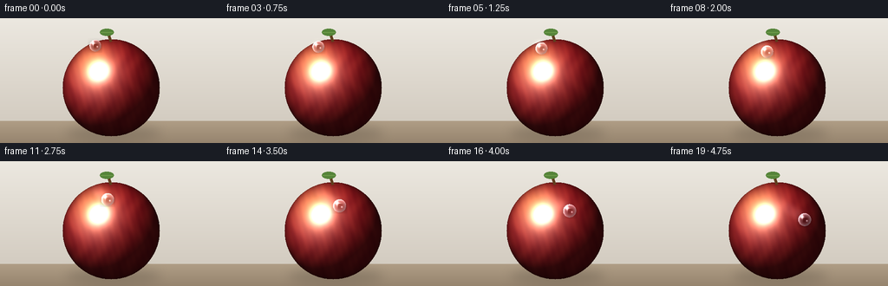
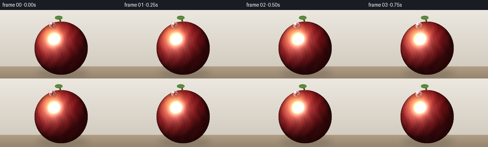
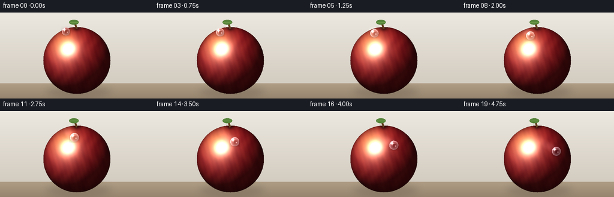
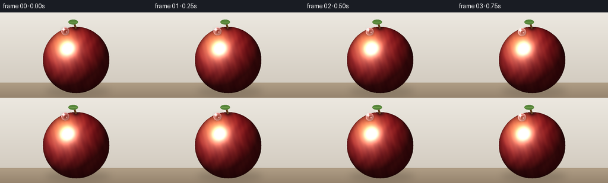
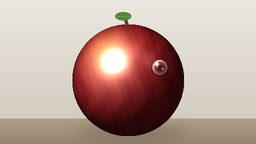
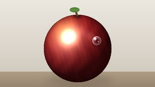
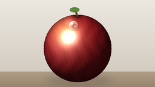

CODING AGENTS AS PIXEL WORLD MODELS
traex/Seed-2.1-Pro-0915 · phygen_038
点击播放 · 原生 RGB 像素
逐轮保存的候选
回放视频、检查图与代码变化。
每份候选均可单独播放。实际图片检查记录在下方工具轨迹中。
候选 01播放与检查图
点击播放 · 原生 RGB 像素


展开代码变化
--- 上一保存版本
+++ 本次保存版本
@@ -0,0 +1,247 @@
+"""Text-to-video: a glistening dewdrop sliding across a waxed apple.
+
+Pure numpy/PIL renderer. A shaded apple sphere is rendered once; per frame a
+lens-like dewdrop (refraction tint, fresnel rim, twin specular glints and a
+contact shadow) travels along a 3D sphere path so its motion follows the
+apple's curvature, leaving a fading glossy wet trail.
+"""
+import numpy as np
+from PIL import Image, ImageDraw, ImageFilter
+
+import artifact_io
+
+SS = 2 # supersampling factor for smooth edges
+W, H = 256, 144
+SW, SH = W * SS, H * SS
+N_FRAMES, FPS = 20, 4.0
+
+rng = np.random.default_rng(7)
+
+
+# ---------------------------------------------------------------- utilities
+def grid():
+ yy, xx = np.mgrid[0:SH, 0:SW].astype(np.float32)
+ return xx / SS, yy / SS
+
+
+def normalize(v):
+ v = np.asarray(v, dtype=np.float32)
+ return v / np.linalg.norm(v)
+
+
+def bilinear_sample(img, x, y):
+ """Bilinear sample of an HxWx3 float image at float pixel coords."""
+ h, w = img.shape[:2]
+ x0 = np.floor(x).astype(np.int32)
+ y0 = np.floor(y).astype(np.int32)
+ x1 = np.clip(x0 + 1, 0, w - 1)
+ y1 = np.clip(y0 + 1, 0, h - 1)
+ x0c = np.clip(x0, 0, w - 1)
+ y0c = np.clip(y0, 0, h - 1)
+ wx = (x - x0)[..., None]
+ wy = (y - y0)[..., None]
+ src = img.astype(np.float32)
+ top = src[y0c, x0c] * (1 - wx) + src[y0c, x1] * wx
+ bot = src[y1, x0c] * (1 - wx) + src[y1, x1] * wx
+ return top * (1 - wy) + bot * wy
+
+
+def gaussian(x, mu, sigma):
+ return np.exp(-0.5 * ((x - mu) / sigma) ** 2)
+
+
+# ---------------------------------------------------------------- background
+def render_background(xx, yy):
+ img = np.zeros((SH, SW, 3), dtype=np.float32)
+ t = np.clip(yy / H, 0, 1)[..., None]
+ top = np.array([236, 232, 224], dtype=np.float32)
+ bottom = np.array([206, 198, 186], dtype=np.float32)
+ img[:] = top * (1 - t) + bottom * t
+ # warm tabletop band
+ table = yy > 118.0
+ tt = ((yy - 118.0) / (H - 118.0))[..., None]
+ table_col = np.array([176, 158, 134], dtype=np.float32) * (1 - tt) + \
+ np.array([150, 132, 110], dtype=np.float32) * tt
+ img[table] = table_col[table]
+ return img
+
+
+# ---------------------------------------------------------------- apple
+CX, CY, R = 128.0, 80.0, 56.0
+LIGHT = normalize([-0.45, 0.62, 0.64]) # x, y-up, z (toward viewer)
+VIEW = normalize([0.0, 0.0, 1.0])
+HALF = normalize(LIGHT + VIEW)
+
+
+def render_apple(xx, yy):
+ dx = (xx - CX) / R
+ dy = (yy - CY) / R
+ d2 = dx * dx + dy * dy
+ inside = d2 <= 1.0
+ nz = np.sqrt(np.clip(1.0 - d2, 0, 1))
+ nx = dx
+ ny = -dy # screen y is down, normal y up
+
+ # base skin: two reds blended by broad waxy streaks + a yellow blush
+ streak = 0.5 + 0.5 * np.sin(nx * 16.0 + 2.2 * np.sin(ny * 6.0))
+ fine = 0.5 + 0.5 * np.sin(nx * 47.0 + ny * 13.0)
+ red_deep = np.array([146, 18, 26], dtype=np.float32)
+ red_light = np.array([206, 48, 44], dtype=np.float32)
+ mix = np.clip(0.30 * streak + 0.12 * fine, 0, 1)[..., None]
+ base = red_deep * (1 - mix) + red_light * mix
+
+ blush = (gaussian(nx + 0.35, 0.0, 0.28) *
+ gaussian(ny - 0.45, 0.0, 0.30))[..., None]
+ base = base * (1 - 0.55 * blush) + np.array([228, 178, 72], np.float32) * (0.55 * blush)
+
+ # diffuse lambert
+ ndl = np.clip(nx * LIGHT[0] + ny * LIGHT[1] + nz * LIGHT[2], 0, 1)
+ shade = 0.30 + 0.85 * ndl
+ img = base * shade[..., None]
+
+ # tight wax specular + broad soft sheen
+ ndh = np.clip(nx * HALF[0] + ny * HALF[1] + nz * HALF[2], 0, 1)
+ spec = np.power(ndh, 46) * 1.25 + np.power(ndh, 7) * 0.22
+ # soft reflected-light glow near upper-left limb
+ sheen = gaussian(nx + 0.42, 0.0, 0.32) * gaussian(ny - 0.30, 0.0, 0.42) * 0.18
+ img += (spec + sheen)[..., None] * np.array([255, 246, 236], np.float32)
+
+ # rim darkening / ambient occlusion toward the silhouette
+ rim = np.power(np.clip(1.0 - nz, 0, 1), 2.2)
+ img *= (1.0 - 0.42 * rim)[..., None]
+ img[~inside] = 0.0
+ return np.clip(img, 0, 255), inside, nz
+
+
+# ---------------------------------------------------------------- dewdrop path
+def drop_pose(t):
+ """Position on a 3D sphere; theta polar from top, az azimuth left->right."""
+ theta0, theta1 = 0.52, 1.34
+ az0, az1 = -0.72, 0.62
+ te = t ** 1.55 # gravity-like acceleration
+ theta = theta0 + (theta1 - theta0) * te
+ az = az0 + (az1 - az0) * (0.25 * t + 0.75 * te)
+ st, ct = np.sin(theta), np.cos(theta)
+ sa, ca = np.sin(az), np.cos(az)
+ x = CX + R * st * sa
+ y = CY - R * ct
+ z = R * st * ca # > 0: front hemisphere
+ rad = 6.1 + 1.7 * (z / R) # shrink near silhouette
+ return x, y, rad, z / R
+
+
+def composite_drop(frame, x, y, r, zn, sparkle):
+ """Draw a refractive water drop onto a float HxWx3 frame (supersampled)."""
+ h, w = frame.shape[:2]
+ x0, x1 = max(int(x - r - 3), 0), min(int(x + r + 4), w)
+ y0, y1 = max(int(y - r - 3), 0), min(int(y + r + 4), h)
+ if x1 <= x0 or y1 <= y0:
+ return
+ py, px = np.mgrid[y0:y1, x0:x1].astype(np.float32)
+ u = (px - x) / r
+ v = (py - y) / r
+ rho2 = u * u + v * v
+ body = rho2 <= 1.0
+ if not body.any():
+ return
+
+ # contact shadow, offset toward lower-right (light is upper-left)
+ sh = np.exp(-(((px - x - 1.6) / (r * 1.05)) ** 2 +
+ ((py - y - 2.2) / (r * 0.85)) ** 2)) * 0.30
+ frame[y0:y1, x0:x1] *= (1.0 - sh[..., None])
+
+ # lens magnification: sample the apple toward the drop centre
+ sx = x + (px - x) * 0.52
+ sy = y + (py - y) * 0.52
+ sampled = bilinear_sample(frame, sx, sy)
+ rho = np.sqrt(rho2)
+ fresnel = np.clip(rho ** 2.6, 0, 1)
+ drop_col = sampled.copy()
+ drop_col *= (1.0 + 0.10 * (1.0 - rho[..., None])) # bright lens centre
+ drop_col += np.array([18, 30, 42], np.float32) * (0.25 * fresnel[..., None])
+ # bright fresnel rim, strongest on the lit (upper-left) side
+ rim_light = fresnel * (0.55 + 0.45 * np.clip(-(u + v), 0, 1))
+ drop_col += rim_light[..., None] * np.array([235, 244, 250], np.float32) * 0.85
+ # dark refracted crescent at lower-right inner edge
+ crescent = np.clip((rho - 0.55) / 0.45, 0, 1) * np.clip((u + v) * 0.9, 0, 1)
+ drop_col *= (1.0 - 0.35 * crescent[..., None])
+
+ # primary specular glint (upper-left)
+ glint = np.exp(-(((u + 0.38) / 0.20) ** 2 + ((v + 0.42) / 0.24) ** 2))
+ drop_col += glint[..., None] * np.array([255, 255, 255], np.float32)
+ # secondary tiny glint
+ glint2 = 0.7 * np.exp(-(((u - 0.34) / 0.12) ** 2 + ((v - 0.18) / 0.12) ** 2))
+ drop_col += glint2[..., None] * np.array([220, 238, 250], np.float32)
+ # animated sparkle cross, strongest when the drop catches the light
+ cross = (np.exp(-((u + 0.38) / 0.06) ** 2) * np.exp(-((v + 0.42) / 0.55) ** 2) +
+ np.exp(-((v + 0.42) / 0.06) ** 2) * np.exp(-((u + 0.38) / 0.55) ** 2))
+ drop_col += (cross * sparkle)[..., None] * np.array([255, 255, 255], np.float32)
+
+ region = frame[y0:y1, x0:x1]
+ alpha = (body.astype(np.float32) * 0.97)[..., None]
+ region[:] = region * (1 - alpha) + np.clip(drop_col, 0, 255) * alpha
+
+
+# ---------------------------------------------------------------- main render
+def main():
+ xx, yy = grid()
+ bg = render_background(xx, yy)
+ apple, inside, nz = render_apple(xx, yy)
+ base = bg.copy()
+ base[inside] = apple[inside]
+
+ # ground shadow under the apple
+ sh_img = Image.new("L", (SW, SH), 0)
+ d = ImageDraw.Draw(sh_img)
+ d.ellipse([(CX - 52) * SS, 124 * SS, (CX + 58) * SS, 140 * SS], fill=90)
+ sh_img = sh_img.filter(ImageFilter.GaussianBlur(6 * SS))
+ shadow = np.asarray(sh_img, dtype=np.float32)[..., None] / 255.0
+ base *= 1.0 - 0.45 * shadow
+
+ # stem and a small leaf
+ pil = Image.fromarray(base.astype(np.uint8))
+ dr = ImageDraw.Draw(pil)
+ dr.line([(CX * SS, (CY - R + 3) * SS),
+ ((CX - 4) * SS, (CY - R - 9) * SS)], fill=(96, 62, 30), width=3 * SS)
+ dr.ellipse([(CX - 13) * SS, (CY - R - 12) * SS,
+ (CX + 3) * SS, (CY - R - 4) * SS], fill=(86, 132, 58))
+ dr.line([(CX - 12) * SS, (CY - R - 8) * SS,
+ (CX + 2) * SS, (CY - R - 8) * SS], fill=(110, 156, 74), width=SS)
+ base = np.asarray(pil, dtype=np.float32)
+
+ trail = np.zeros((SH, SW), dtype=np.float32)
+ frames = []
+ prev_pose = None
+ for i in range(N_FRAMES):
+ t = i / (N_FRAMES - 1)
+ x, y, r, zn = drop_pose(t)
+
+ frame = base.copy()
+
+ # decaying glossy wet trail from previous positions
+ if prev_pose is not None:
+ px0, py0, pr0 = prev_pose
+ tr = Image.new("L", (SW, SH), 0)
+ td = ImageDraw.Draw(tr)
+ td.ellipse([(px0 - pr0) * SS, (py0 - pr0 * 0.8) * SS,
+ (px0 + pr0) * SS, (py0 + pr0 * 0.8) * SS], fill=70)
+ tr = tr.filter(ImageFilter.GaussianBlur(2 * SS))
+ trail = trail * 0.80 + np.asarray(tr, dtype=np.float32) / 255.0 * 0.5
+ gloss = np.clip(trail, 0, 0.6)
+ frame += gloss[..., None] * np.array([250, 244, 238], np.float32) * 0.35
+ prev_pose = (x, y, r)
+
+ sparkle = 0.35 + 0.65 * max(0.0, np.sin(t * np.pi * 3.2 + 0.6))
+ composite_drop(frame, x * SS, y * SS, r * SS, zn, sparkle)
+
+ out = Image.fromarray(np.clip(frame, 0, 255).astype(np.uint8))
+ out = out.resize((W, H), Image.Resampling.LANCZOS)
+ frames.append(np.asarray(out, dtype=np.uint8))
+
+ frames = np.stack(frames, axis=0)
+ artifact_io.save(frames, ".")
+ print(f"saved {frames.shape}")
+
+
+if __name__ == "__main__":
+ main()
候选 02播放与检查图
点击播放 · 原生 RGB 像素


展开代码变化
--- 上一保存版本
+++ 本次保存版本
@@ -101,10 +101,14 @@
# tight wax specular + broad soft sheen
ndh = np.clip(nx * HALF[0] + ny * HALF[1] + nz * HALF[2], 0, 1)
- spec = np.power(ndh, 46) * 1.25 + np.power(ndh, 7) * 0.22
+ spec = np.power(ndh, 40) * 0.95 + np.power(ndh, 7) * 0.16
# soft reflected-light glow near upper-left limb
sheen = gaussian(nx + 0.42, 0.0, 0.32) * gaussian(ny - 0.30, 0.0, 0.42) * 0.18
img += (spec + sheen)[..., None] * np.array([255, 246, 236], np.float32)
+
+ # crown dimple where the stem emerges
+ dimple = np.exp(-((nx / 0.11) ** 2 + ((ny - 0.965) / 0.075) ** 2))
+ img *= (1.0 - 0.55 * dimple)[..., None]
# rim darkening / ambient occlusion toward the silhouette
rim = np.power(np.clip(1.0 - nz, 0, 1), 2.2)
@@ -155,19 +159,19 @@
sy = y + (py - y) * 0.52
sampled = bilinear_sample(frame, sx, sy)
rho = np.sqrt(rho2)
- fresnel = np.clip(rho ** 2.6, 0, 1)
+ fresnel = np.clip(rho ** 2.2, 0, 1)
drop_col = sampled.copy()
- drop_col *= (1.0 + 0.10 * (1.0 - rho[..., None])) # bright lens centre
- drop_col += np.array([18, 30, 42], np.float32) * (0.25 * fresnel[..., None])
+ drop_col *= (1.0 + 0.14 * (1.0 - rho[..., None])) # bright lens centre
+ drop_col += np.array([10, 16, 22], np.float32) * (0.12 * fresnel[..., None])
# bright fresnel rim, strongest on the lit (upper-left) side
- rim_light = fresnel * (0.55 + 0.45 * np.clip(-(u + v), 0, 1))
- drop_col += rim_light[..., None] * np.array([235, 244, 250], np.float32) * 0.85
+ rim_light = fresnel * (0.72 + 0.35 * np.clip(-(u + v), 0, 1))
+ drop_col += rim_light[..., None] * np.array([232, 242, 250], np.float32) * 0.62
# dark refracted crescent at lower-right inner edge
crescent = np.clip((rho - 0.55) / 0.45, 0, 1) * np.clip((u + v) * 0.9, 0, 1)
- drop_col *= (1.0 - 0.35 * crescent[..., None])
+ drop_col *= (1.0 - 0.25 * crescent[..., None])
# primary specular glint (upper-left)
- glint = np.exp(-(((u + 0.38) / 0.20) ** 2 + ((v + 0.42) / 0.24) ** 2))
+ glint = np.exp(-(((u + 0.38) / 0.22) ** 2 + ((v + 0.42) / 0.26) ** 2))
drop_col += glint[..., None] * np.array([255, 255, 255], np.float32)
# secondary tiny glint
glint2 = 0.7 * np.exp(-(((u - 0.34) / 0.12) ** 2 + ((v - 0.18) / 0.12) ** 2))
可观测工具轨迹
实际执行的命令与返回图片。
命令 1exit 0
/bin/bash -lc 'cat prompt.txt GENERATION_RULES.md task_spec.json 2>/dev/null | head -200'
命令 2exit 0
/bin/bash -lc 'ls -la'
命令 3exit 0
/bin/bash -lc 'cat artifact_io.py'
命令 4exit 0
/bin/bash -lc 'cd . && python generate.py && ls -la frames | head -6 && ls -la pixels.npz inspection.png index.html'
命令 5exit 0
/bin/bash -lc 'cd . && python -c "
from generate import drop_pose
for i in range(20):
t=i/19
x,y,r,zn=drop_pose(t)
if i%2==0: print(i, round(x,1), round(y,1), round(r,1), round(zn,2))
"'命令 6exit 0
/bin/bash -lc 'cd . && mkdir -p candidates/v1 && cp pixels.npz inspection.png index.html candidates/v1/ && cp -r frames candidates/v1/ && ls candidates/v1'
命令 7exit 0
/bin/bash -lc 'cd . && python generate.py'
视觉工具实际返回图片 1

视觉工具实际返回图片 2

视觉工具实际返回图片 3

视觉工具实际返回图片 4

视觉工具实际返回图片 5

保存候选 2 份；完成命令 7 次；可验证图片返回 5 张。原始 API 响应与完整日志保留在本地。